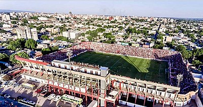

Comienzo
El Club Atlético San Martín fue fundado por 14 jóvenes del sur de San Miguel de Tucumán, en la zona más populosa de la ciudad.2 Los fundadores fueron Romelio Castro, Ezequiel Riquelme, Secundino Torossi, Medardo Figueroa, Ramón Méndez, Zacarías Robles, Segundo Medina, Manuel Reynoso, Justo González, Alberto Muruaga, Segundo Rivero, Amado Pereyra, Ángel Suárez y Ramón Romano. El acta de fundación se firmó el 2 de noviembre de 1909. Desde entonces siempre fue protagonista de los torneos de la Federación Tucumana de Fútbol (el primer campeón en 1919) y torneos organizados por AFA.
Estadio

"La Ciudadela"
San Martín fue el primer campeón de la Federación Tucumana de Fútbol, en 1919. La popularidad ganada con ello lo llevó a construir un estadio inaugurado en 1924. Sin embargo los malos resultados deportivos y la acumulación de deudas obligaron al club a vender el estadio en 1929.
En 1930 después de la mala experiencia vivida; socios y dirigentes más unidos que nunca, bajo la presidencia del Ing. Mario Bron compran el inmueble de Av. Pellegrini y Bolívar, terreno en el que se levanta actualmente el estadio. Dos años más tarde y ya bajo la presidencia de Francisco San Juan se lo inaugura, precisamente un 24 de marzo de 1932, donde disputó un partido internacional frente al Team Uruguay Postal de Montevideo, ese día se hicieron presentes el Gobernador de la provincia Juan Luis Nougués y las autoridades correspondientes de la Federación Tucumana de Fútbol; por entonces el predio contaba con una coqueta tribuna oficial metálica, exclusiva para los asociados y dirigentes, también se trajo desde el Primer Estadio de Alberdi y Bolívar la vieja tribuna de madera, que se la ubicó en el sector de Av. Pellegrini. El estadio fue denominado La Ciudadela, nombre con múltiples significados, pues ese era el nombre que llevaba la fortaleza instalada en ese punto desde la época colonial, razón por la cual así fue llamado el barrio; también fue en esos terrenos donde se disputó en 1812 la Batalla de Tucumán, decisiva para la Independencia de Argentina; finalmente el club y sus simpatizantes asumieron la idea de que el estadio, debía ser un "fortín" o "ciudadela", en la que el equipo resultara invencible.
Durante la presidencia de Ernesto García Soaje San Martín creció a pasos agigantados y sobre todo en lo que a obras en el estadio se refiere, llevándose se capacidad de 5.000 personas a 8.000 a fines de 1968. Este hecho permitía por su comodidad lograr una mayor concurrencia de espectadores y por ende que las recaudaciones fueran aumentando permanentemente. Desde el instante mismo en que el Ingeniero Natalio Mirkin asumía la presidencia del club en 1973 se comprometió a continuar los ambiciosos planes tendientes a dotar al estadio de mayores comodidades. Es así que se decide encarar la ampliación de las tribunas populares sobre calles Rondeau y Avenida Pellegrini y, en agosto de 1976, se inaugura la ampliación sobre el sector sur que daban cabida a 3.000 personas, con lo que el estadio tenía ya una capacidad de 13 000 espectadores.
Desde el instante mismo en que el Ingeniero Natalio Mirkin asumía la presidencia del club en 1973 se comprometió a continuar los ambiciosos planes tendentes a dotar al estadio de mayores comodidades. Es así que se decide encarar la ampliación de las tribunas populares sobre calles Rondeau y Avenida Pellegrini y, en agosto de 1976, se inaugura la ampliación sobre el sector sur que daba cabida a 1000 personas, con lo que el estadio tenía ya una capacidad de 21.550 espectadores. Unos meses más tarde, mayo de 1977, se habilita la ampliación de la tribuna que da espalda a la Avenida Pellegrini para 4500 espectadores más, con la construcción de los codos de calle Pelegrini y calle Bolívar, finalmente la capacidad del estadio llegó a 18.000 aficionados. Además de jugar San Martín en el estadio todos los años se juega la final de la Liga Tucumana de Fútbol. En mayo de 2016 se aprobó el proyecto de la creación de una nueva bandeja en la tribuna oficial sur. En la actualidad, el estadio cuenta con una capacidad de 30 000 personas luego de la última ampliación.